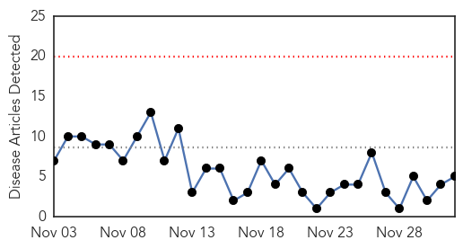
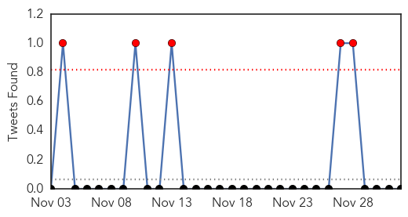
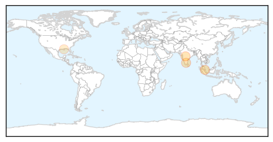
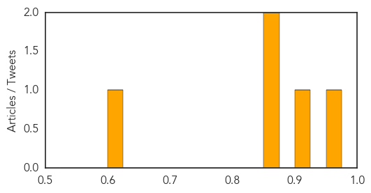
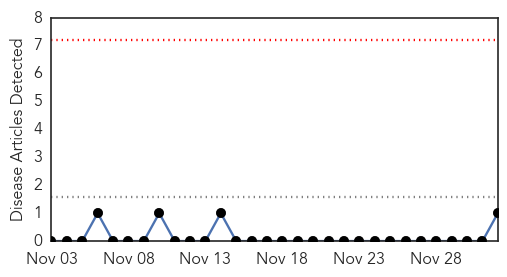
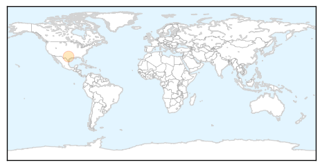

Dengue Fever
30-Day Web Trend
0 alerts, 0 warnings

30-Day Twitter Trend
0 alerts, 0 warnings

Article Locations
Article Confidences
Top Articles:
- 0.963
- Monash University, 60P Australia partner to develop Fenretinide drug for dengue fever
- 0.906
- Asia dengue fever update
- 0.862
- Rains may lead to spurt in dengue cases
- 0.852
- Cuba model suggested to tackle dengue
- 0.606
- Stephen Higgs named tropical medicine society president-elect, honored for vaccine research
Top Tweets:
- 0.681
- Flavivirus news: Asia dengue fever update - Outbreak News Today: Asia dengue fever updateOutbre... http://t.co/wnqSd1CiIm pathogenposse
West Nile Virus
30-Day Web Trend
0 alerts, 0 warnings

30-Day Twitter Trend
0 alerts, 0 warnings

Article Locations
Article Confidences

Top Articles:
Top Tweets:
-
No tweets found for Dec 02, 2014